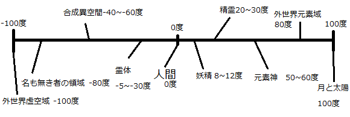

次元温度
次元とは核と体の濃密度による温度差のことである。 物質とは密度が高くなると温度が上がり、密度が下がると温度が下がる。 元素同士がぶつかり、震え、振動し、熱を発するからである。（しかしこの熱、肉体的な熱ではない）人間が通常認識している次元は0度次元であり、人間の肉体のある場所である。 人間の肉体は魂が核であり、肉体が体である。しかし肉体が死ぬと魂だけになり、肉体は朽ちる。 肉体は朽ちても魂は自分の体は元の大きさであると認識するだろう。それが空の体である。 生きているうちは体に血肉が詰まっていたため、0度を維持できていたが中身がからっぽになった霊体は密度が急速に下がり、温度が下がる。 それと同じ要領で、魔晶石などに体の大きさをを記憶させると、空の体を持った魔晶石は密度が下がり温度が下がる。 (近くにいる霊体や空間温度が低い場合は悪寒がする、と言う) ちなみに高次元体とはなにか。それは精霊、妖精、また神である。 氷の妖精などの温度は低めだが、それでも凡そ8度ほどであり、炎の妖精は12度ほどになる。 高位の精霊であれば20度、高くて30度ほどになる。さすがにそこまで行くと達人の呪術師でなければ見えないだろう。

視覚次元
前述の次元とは、温度のことであったがあまりに異なる温度のものは見えなくなる。それはなぜか。 可視波長というものがあるが、全ての物体は波長を出している。モノやイキモノも然り。 そして人間とは0度次元であり、0度±5度波長のものしか見えず、干渉もできない。 (個体差があり、0度ぴったりでなければ見えない人や±10度以内なら見える人もいる、 前者は霊感が全く無く、精霊も見えない。後者は精霊やこの世ならざるもの等様々なものが見えるだろう) 呪術師などはこの可視波長を変えることができる。 見ることはできなくても火などの温度差に敏感なものであれば、近くに霊体があれば火は消え、妖精などがくれば火はボッと燃え上がるだろう。 儀式に火を使うのは、こういうわけである。
触覚次元
見えることはできないが、触れることはできないか。答えは「できない」 自分の次元温度が0度である以上、全く違う波長であるものとは存在が相容れない。 そもそも自分という存在は確実なものではなく、幽霊は精霊と同じ存在だと過程してみよう。 彼等は人間の体をすり抜け、建物もすり抜ける。 それはつまり、振動している場所が違うからである。 波長というのは波であり、同じ場所にあるものなら相殺し、ぶつかる。 それは同じ次元のものだからこそぶつかるのだが、そもそも振動している場所が違うのなら相殺することもぶつかることもない。 ぶつからなければそれは人間の感覚にとって「無いもおなじ」なのである。